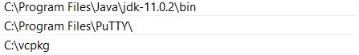

To save ourselves from a lot of headache we are going to use
vcpkg that can be
downloaded here. Vcpkg is a brilliant tool that lets you download a lot of things like protobuf or grpc and any other libraries and programs.
I have downloaded it with git but you can do it by just downloading the zip file and extracting it somewhere, it will be the same. Remember where you put your vcpkg. For me it is:
C:\vcpkg. To build vcpkg.exe (trust me we need that) you can fallow the tutorial on main site provided above or go into
scripts folder inside vcpkg (for me it is
C:\vcpkg\scripts) and run bootstrap.ps1 from powershell. I forgot to mention that everytime I do something in console it is going to be
powershell.
Okay, so we have vcpkg.exe ready to use, I mean, nearly ready. We need to use 'vcpkg' command from PS and for now You can't do that. To make it visible for PS and cmd fallow these steps:
- Open 'start' or just click windows button on your keyboard and start typing 'envi' and 'Edit the system Environment Variables' will pop-up. Click on it,
- 'System Properties' windows should open. At the right bottom you can see Environment Variables..., click on that button,
-
another window pops up. On the second list - System variables find PATH and double click on it or once and 'Edit...',
- now you can see a windows called 'Edit environment variable'. Click on New on the left and paste the location of your vcpkg.exe file in here (for me it is C:\vcpkg). Do not add any more text at the end! So it looks like that at the end:

- then just click Ok everywhere and we are gucci,
- now just open new instance of PS and type 'vcpkg' and a cool list of options should be presented.
We have downloaded vcpkg, now it is time for our
proto compiler. Protoc is a part of Protobuf project maintained by Google itself. To download what we need fallow these few steps:
- Open PS and type: vcpkg install protobuf,
- download will start, just wait till it all finishes (it will take time, be patient. If you think it has frozen.. no, that just take some time, especcialy building windows-rel. You may need to turn off your antivirus for that).Very important thing to note!!! Sometimes PS can get stucked while downloading this stuff. You can click on the PS and press any key on your keyboard so it receives some interrupt, it may speed things up. Anytime you think it takes too long try to do that trick.
- then again open Edit the System Environment Variables like in the previous step,
- again navigate to Path in System Variables and Edit it,
- click on New and add path to newly downloaded protoc.exe.
Note: All things you download with vcpkg are put into packages folder inside vcpkg folder, so for me it is C:\vcpkg\packages.
Full path to protoc.exe in my case is C:\vcpkg\packages\protobuf_x86-windows\tools\protobuf and this is the path we will copy into PATH in System Variables, at the end I have that:
- now, after reopening PS and typing protoc you can see a list of commands for our use.
We are set up and ready to create our projects!